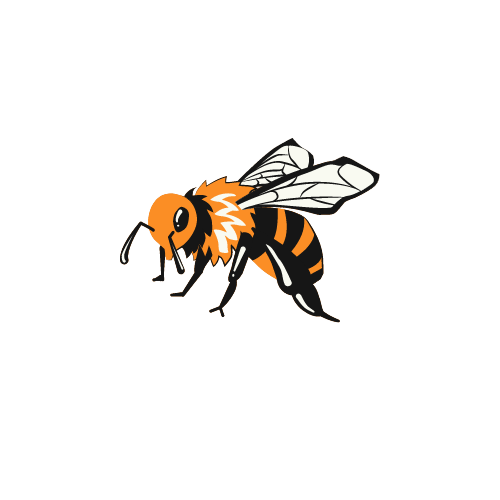

Abelhas
Sobre
As rainhas do pólen
Essencial na atualidadeAlém de produzirem mel, as abelhas cuidam da polinização de plantas.Apolinização é a transferência de células reprodutivas masculinas (núcleos espermáticos) através dos grãos de pólen (espermatozoides das plantas) que estão localizados nas internas de uma flor, ajudando as flores a crescerem. Graças à isso, muitas flores que geram frutos são beneficiadas, como o tomate, a berinjela, o café e o cacau. Porém temos um problema.
Por que abelhas?
Atualmente são conhecidas mais de 20.000 espécies de abelhas.
Esses insetos apresentam grande importância econômica e ecológica, produzindo
diversas substâncias utilizadas pelo homem, como o mel, são responsáveis pela polinização de
diversas espécies.Em relação à biodiversidade uma das principais preocupações é as abelhas, sua
diminuição para ser exato.
Uma das principais causas de mortes de abelhas é a utilização
de agrotoxicos
e outros produtos neonicotinóides e organofosfatos, e além destes produtos, outros fatores são
citados como possíveis causadores – ácaros, vírus, fungos, manejo inadequado, fenômenos naturais
como extremos de frios e estiagens.
Elas podem viver solitárias ou formar colônias com cerca de 80.000 indivíduos.
Os impactos sobre o meio ambiente e a biodiversidade ainda esta incerto, mas é consenso que por se tratarem de insetos polinizadores a sua diminuição drástica ou desaparição das abelhas causaria uma série de alterações em nichos e habitats de plantas, outros insetos e mesmo outros animais que dependem das cadeias alimentares relacionadas, incluindo-se o mel.
Abelhas no Brasil
As abelhas sem ferrão como a Jataí, a Mandaçaia, o Uruçu, o Guaraipo e centenas de outras espécies são nativas do Brasil e pertencem à um mundo singular e pouco explorado da ecologia. De acordo com estudos, cerca de 90% das espécies da Mata Atlântica dependem diretamente destas abelhas para a sua reprodução, gerando um sistema simbiótico fascinante. A criação destas espécies é denominada de meliponicultora, e ocorre em pequenas caixas de madeiras, onde a colônia mantêm o controle da produção de mel e da sua organização social.
Abelhas sem Ferrão
As abelhas sem ferrão, parece algo ilógico mas, o fato que torna estas abelhas um potencial é o seu ferrão. Diferente do que seu nome indica, esta abelhas possuem sim um ferrão, entretanto, ele é atrofiado, o que as torna incapazes de ferroarem. Esta característica torna o seu manejo drasticamente mais fácil e a sua criação pode ocorrer até em áreas urbanas.
Produtos das abelhas sem ferrão
A meliponicultora destas espécies tem se expandido pelo Brasil e principalmente no sul. Ela vem como uma alternativa de geração de renda em diversas propriedades rurais pelo fácil manejo, se tornando cada vez mais popular e mais difundida no meio econômico. O seu mel, além de delicioso, é utilizado para fins terapêuticos, produção própolis (matéria prima dos polifenóis), geoprópolis (medicamento popular), pólen e cera.
Abelhas e a economia
No Brasil a produção de mel está ligada a pequenos agricultores e apicultores
De acordo com a Food and Agriculture Organization (FAO), em 2017, o Brasil era o 11º maior produtor de mel do mundo, com 41,5 mil toneladas. Em 2019, segundo o Instituto Brasileiro de Geografia e Estatística (IBGE), a produção foi de 45,9 mil toneladas, volume 10,60% maior que em 2017, porém insuficiente para incluir o Brasil na lista dos 10 maiores do mundo.(GLOBO RURAL, 2020)
No Brasil a produção de mel está ligada a pequenos agricultores e apicultores, a principal região produtora de mel é o Sul com 49% da produção brasileira.Sul é o maior produtor nacional com 20%, Paraná com 16,2% e Santa Catarina com 12,9%, destacando-se também Minas Gerais e São Paulo. No Nordeste há uma produção significativa: aproximadamente 46 mil apicultores de nove estados nordestinos produzem 40% do mel brasileiro em épocas com índices de chuvas normais. Em todo o país são 350 mil produtores, sendo 90% agricultores familiares com renda anual de até R$ 6.000,00. Esses dados foram aopontados pelo site:EcoDebate, 2014.